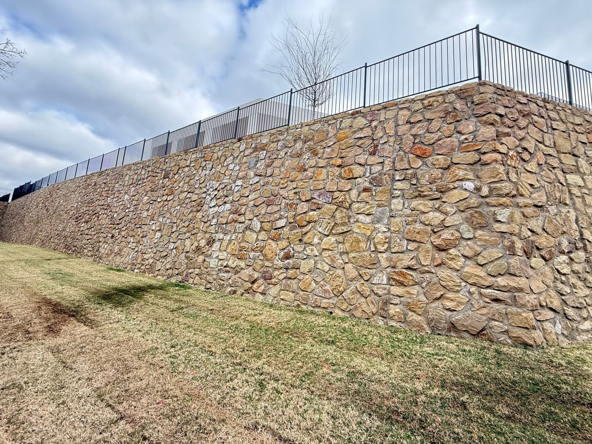
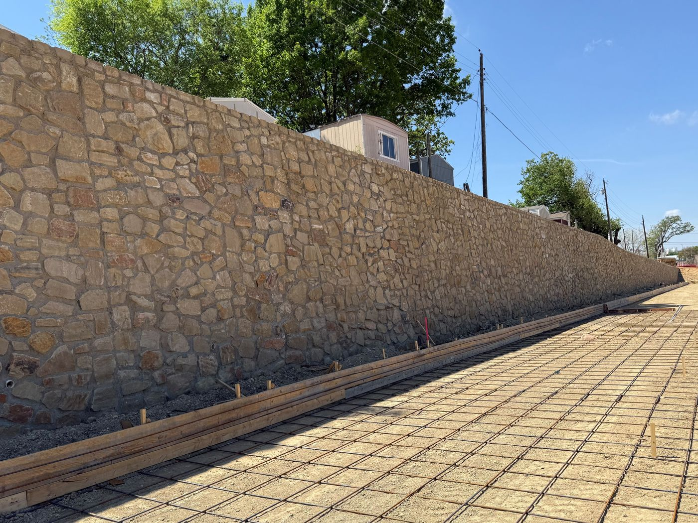
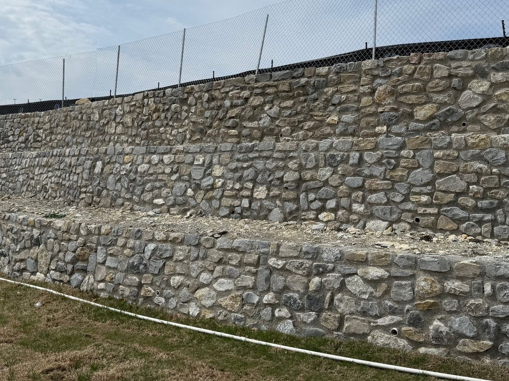
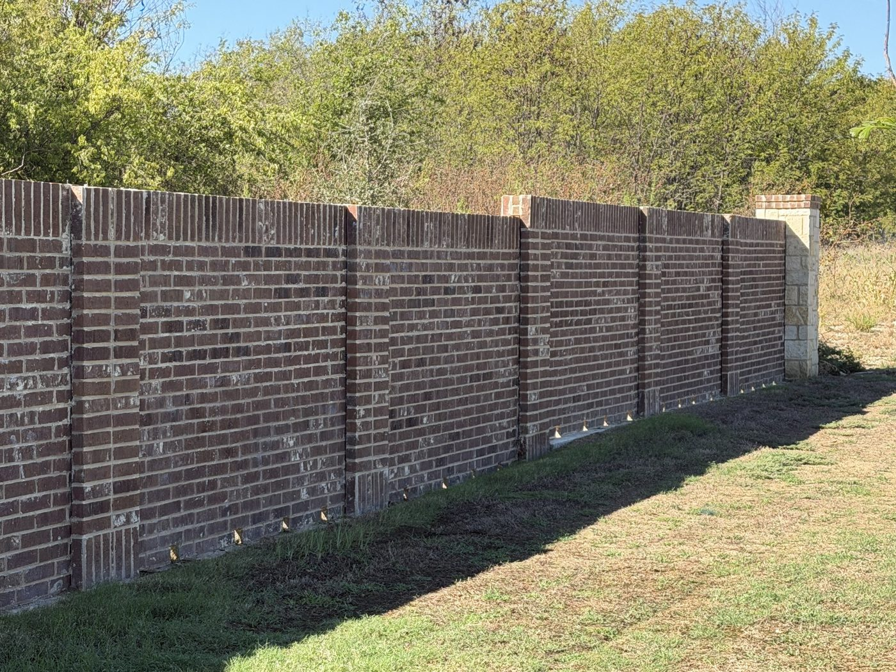

Gravity, segmental and concrete walls
- Masonry and stone gravity walls
- Segmental block with geogrid
- Cantilevered concrete walls
- Gabion and shotcrete walls
Out of Aledo, working all over Texas
DirtSavers engineers retaining walls, screen walls, entry monuments and shade structures for contractors, builders and developers across Texas. Sealed plans for permit, designed with construction and cost in mind.

Sealed engineering for the walls and structures that go in after the dirt work. Take one apart in 3D →
Perimeter, thoroughfare and property line screen walls, with the piers, columns and foundations under them.
Screen wall design →Community entries, logo columns, sign walls and overhead features, with sealed drawings for permit.
Entry monument design →Foundations for manufactured shade structures, and custom steel and timber pavilions and cabanas.
Shade structure design →Observation of piers, footings and wall construction, proposed as a separate scope and scheduled around your construction.
Construction observation →A check of the slope, the wall and the soil together, for tall walls, tiered walls and walls on slopes or next to water.
How walls fail and global stability →We value your business and your time. These are the things we make a priority on every job.
“DirtSavers has been my go-to third party retaining wall engineer for 10+ years. They have designed the retaining walls on hundreds of my projects and have continually provided excellent consultation and service.”
Trey Bingham · Vice President, C&W Stoneworks“DirtSavers provides quality, accurate and timely services. Ratliff has worked hard to earn a great reputation, and we trust DirtSavers to keep us in high standing in our industry.”
Bobby Kinser · Director of Field Operations, Ratliff Hardscape“When it comes to retaining wall engineering, DirtSavers is our go-to at Rock Steady Walls. Their dependable service, clear communication, and practical designs give us the confidence to keep sending projects their way.”
Reginald Singh · Owner, Rock Steady Walls“Quick turnaround, very responsive, and quality design that leaves no doubt about the longevity of the wall.”
Garrett Seagraves · Ameriwall Masonry“DirtSavers turns our designs around quickly. Always efficient and professional.”
Alec Johns · Sage and Stone LandscapesWalls, columns and entries we engineered. See the projects →





From first call to sealed drawings, plus observation when the job calls for it.
Plans if you have them. If not, photos, a sketch or an address are enough to start.
A written proposal covering scope, fee and schedule. Design starts when it is accepted.
We engineer the walls or structures and deliver a P.E. sealed plan set for city or owner review.
Separately scoped and not part of every engagement. When needed, visits are proposed on their own and tied to the construction schedule.
The site or grading plan, the landscape or hardscape plan, and the geotechnical report, if available. Email them to plans@dirtsavers.com or use the upload link on the Send Plans page.
No. Call or email with whatever you have: photos, a sketch, an address or just a question. We will tell you what is needed and follow up with a proposal.
It depends on the size of the job and what we have to work from. Tell us your bid date or permit deadline up front and we will let you know what we can do.
Yes. Design work is done remotely for projects anywhere in Texas. Field visits outside Dallas-Fort Worth are arranged project by project. How that works.
Not automatically. Construction observation is a separate scope and is not part of every design engagement. When a project needs it, we propose it separately, with visits tied to the construction schedule and a written report after each visit.
Yes. We investigate existing walls and provide repair recommendations. See leaning and failing walls.